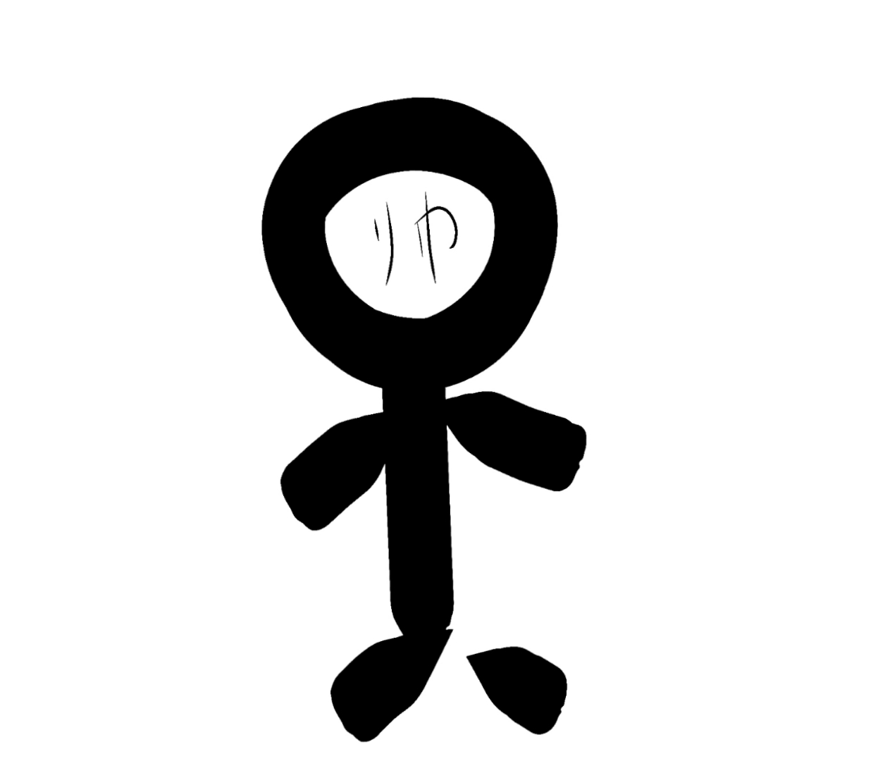
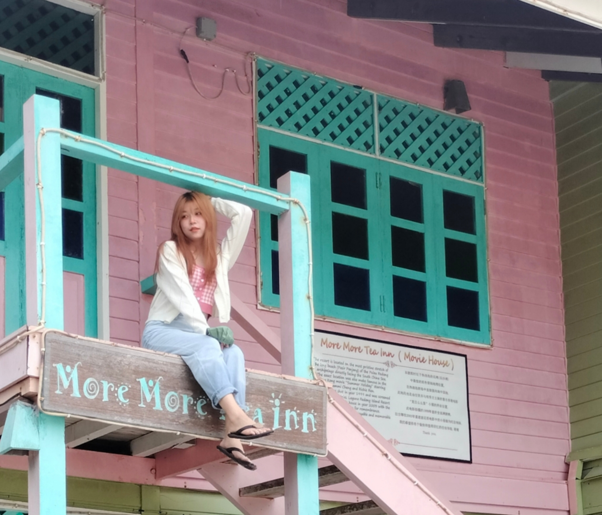

The woman I love most in the world
My mum is a superwoman and whatever happens just tell her and you will get a solution. She was such an avid fan of mugwort that she opened a beauty company that focused on mugwort. It was really hard to see her as she worked early and late every day. But she always made time to talk to us and I think she was one of the strongest women in the world.

The dad who always thinks he's handsome
My father had a good temper, so good that he never got angry with us. He loved to sing and sang in the house every day until the neighbours came knocking at the door. His favourite thing was to tell us stories about history and he was very knowledgeable about it. He was very narcissistic and always felt that all our good qualities were because we had inherited them from him. But I still loved him very much.The most beautiful girl in the universe
I grew up with my sister, who is 2 years older than me, and my sister grew up bullying me. But she was a very good sister and all it took was a "sister" and you got a response from her. I'm often glad I have a sister, otherwise I couldn't imagine being on my own. She was the girl I loved most apart from my mum.
